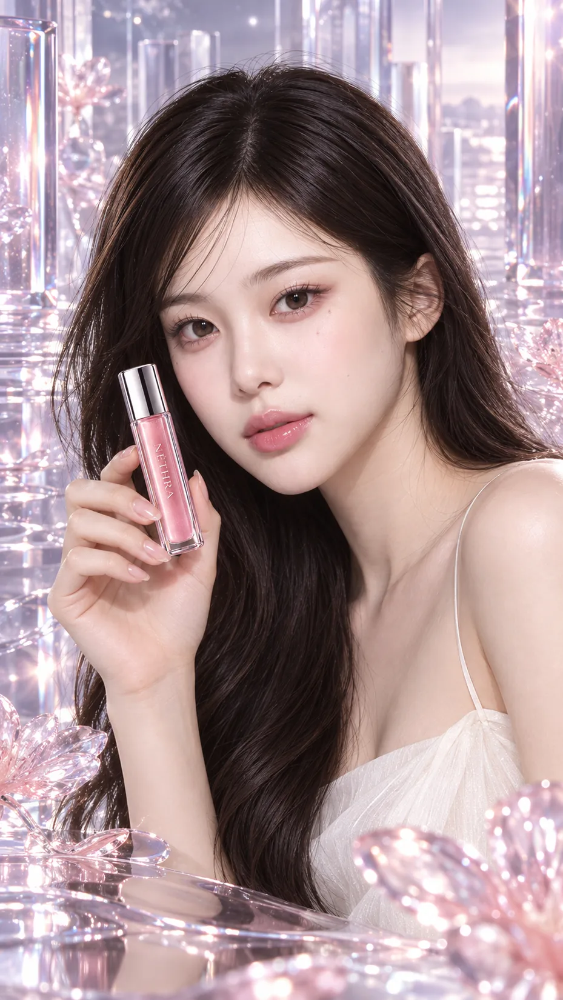
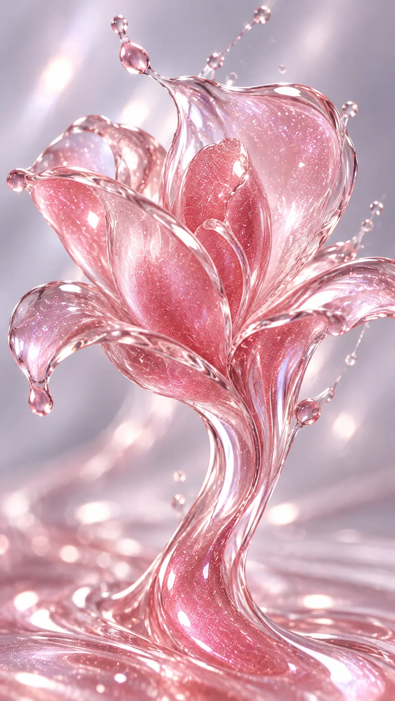

AI BEAUTY BRAND CAMPAIGN / 2026
NÉTHRA↗
ONE COLOR, TWO REALITIES.
립글로스 브랜드 기획부터 가상 모델, 제품, 캠페인 이미지, 광고 영상까지 제작한 엔드 투 엔드 AI 크리에이티브 프로젝트.
프로젝트 상세 보기 ↗PERSONAL WORK / AI CREATIVE LAB · 2026
AI로 이미지를 만드는 것에서 멈추지 않고,
브랜드의 이야기와 시각적 세계를 설계합니다.

각 프로젝트의 결과물뿐 아니라 브랜드 콘셉트부터 제작 과정까지 볼 수 있도록 정리했습니다.

AI BEAUTY BRAND CAMPAIGN / 2026
ONE COLOR, TWO REALITIES.
립글로스 브랜드 기획부터 가상 모델, 제품, 캠페인 이미지, 광고 영상까지 제작한 엔드 투 엔드 AI 크리에이티브 프로젝트.
프로젝트 상세 보기 ↗